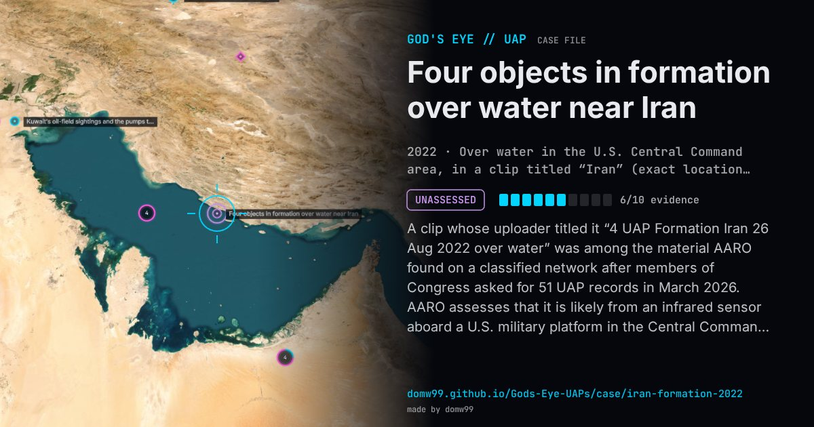

Four objects in formation over water near Iran

A clip whose uploader titled it “4 UAP Formation Iran 26 Aug 2022 over water” was among the material AARO found on a classified network after members of Congress asked for 51 UAP records in March 2026. AARO assesses that it is likely from an infrared sensor aboard a U.S. military platform in the Central Command area in 2022. In it four areas of contrast cross the field of view together from the left and leave near the bottom of the frame; a fifth enters from the top left. It was released on DVIDS in May 2026 as DOW-UAP-PR050.
Explanation
Released in May 2026 without any finding. AARO says only that it is likely infrared footage from a U.S. military platform, uploaded to a classified network in June 2024, and that the batch it came from lacks a substantiated chain of custody. Four small areas of contrast crossing an infrared view together are what birds, balloons or distant aircraft can look like.
What was seen
Shape: Four small areas of contrast moving together, then a fifth
Witnesses: The crew of a U.S. military platform with an infrared sensor
Duration: About 20 seconds of footage
Sources
Browse
- 2020s
- Unassessed
- Photo and video cases
- Official government documents
- Video footage
- Infrared or other sensor data